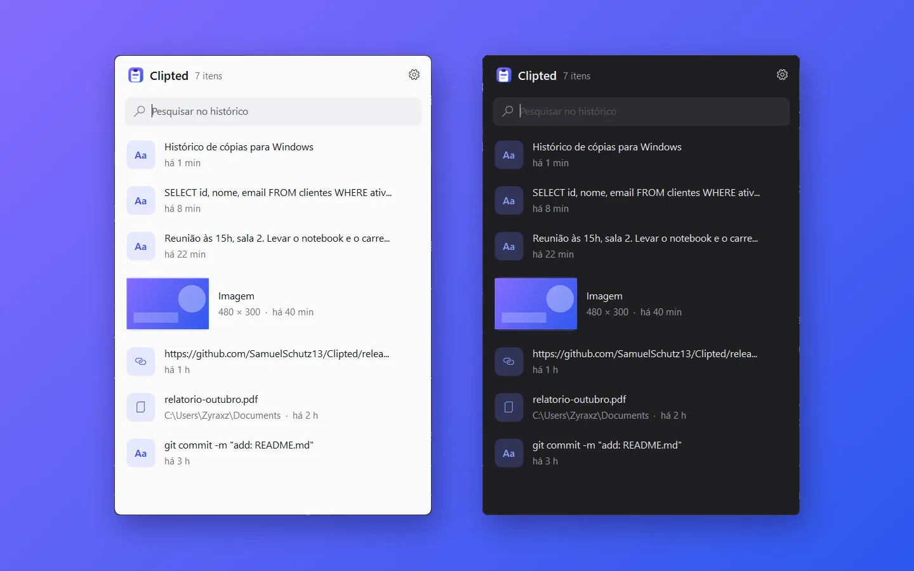
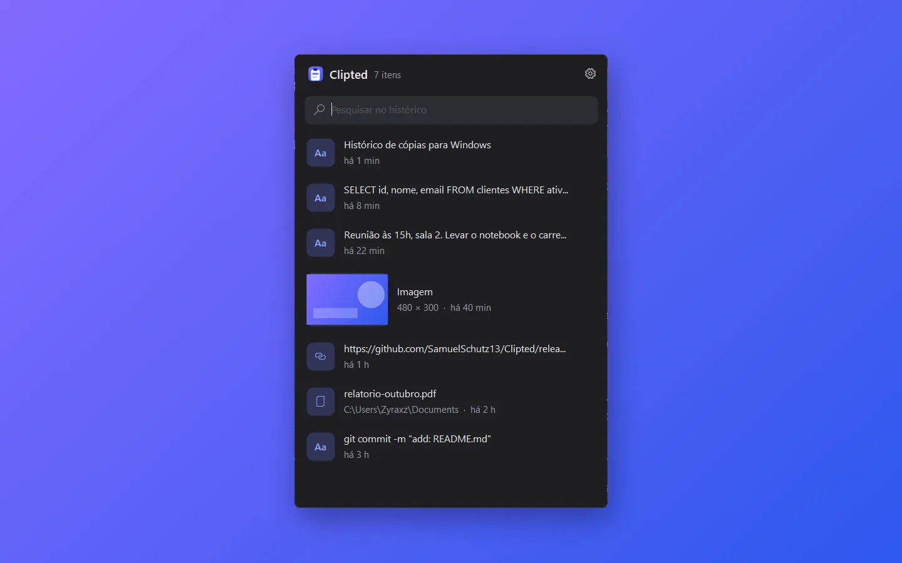
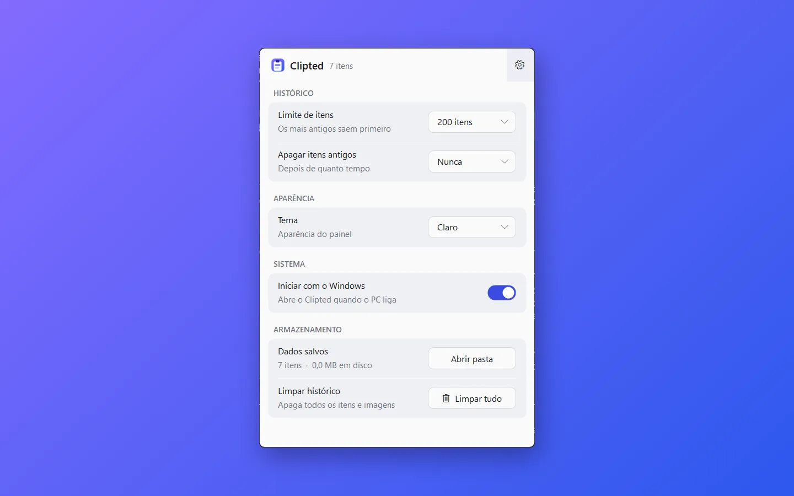

Clipted
Histórico de cópias para Windows: texto, imagens e arquivos num painel na bandeja, num único .exe sem instalador e sem internet.Clipboard history for Windows: text, images and files in a tray panel, in a single .exe with no installer and no network.

 0
0

O que fazWhat it does
- Texto, imagens e arquivos: tudo o que passa pelo
Ctrl+Centra no histórico, mais recente primeiro. Copiar de novo algo repetido só o traz para o topo. - Text, images and files: everything that goes through
Ctrl+Clands in the history, newest first. Copying something again just moves it to the top. - Pesquisa: comece a digitar com o painel aberto e a lista filtra na hora.
- Search: start typing with the panel open and the list filters right away.
- Clique para reutilizar: o item volta para a área de transferência e o painel se fecha, pronto para o
Ctrl+V. Com Shift, abre links e mostra imagens maiores. - Click to reuse: the item goes back to the clipboard and the panel closes, ready for
Ctrl+V. With Shift, it opens links and shows images larger. - Teclado em tudo: setas,
Enterpara usar,Deletepara apagar,Escpara fechar. - Keyboard everywhere: arrows,
Enterto use,Deleteto remove,Escto close. - Configurações: limite de itens, apagar itens antigos, tema claro ou escuro e iniciar com o Windows.
- Settings: item limit, removing old items, light or dark theme and start with Windows.
- Respeita gerenciadores de senha que pedem para a cópia não ser registrada.
- Respects password managers that ask for a copy not to be recorded.
Como funcionaHow it works
Feito em C# com WinForms sobre o .NET Framework 4, que já vem com o Windows. O painel se registra como ouvinte da área de transferência (WM_CLIPBOARDUPDATE), então não há polling. O histórico fica em %APPDATA%\Clipted: um history.txt com uma linha por item e as imagens em PNG com o hash SHA-1 como nome, então a mesma imagem nunca é salva duas vezes.Built in C# with WinForms on .NET Framework 4, which ships with Windows. The panel registers as a clipboard listener (WM_CLIPBOARDUPDATE), so there is no polling. History lives in %APPDATA%\Clipted: a history.txt with one line per item and images as PNG named by their SHA-1 hash, so the same image is never saved twice.
Como compilarBuild it
git clone https://github.com/SamuelSchutz13/Clipted.git cd Clipted build.cmd Clipted.exe --selftest
ImagensImages

